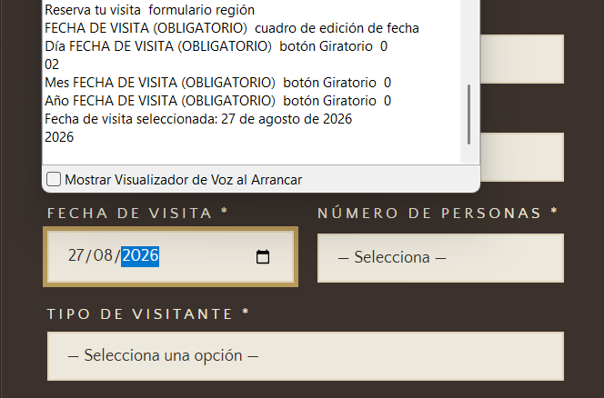
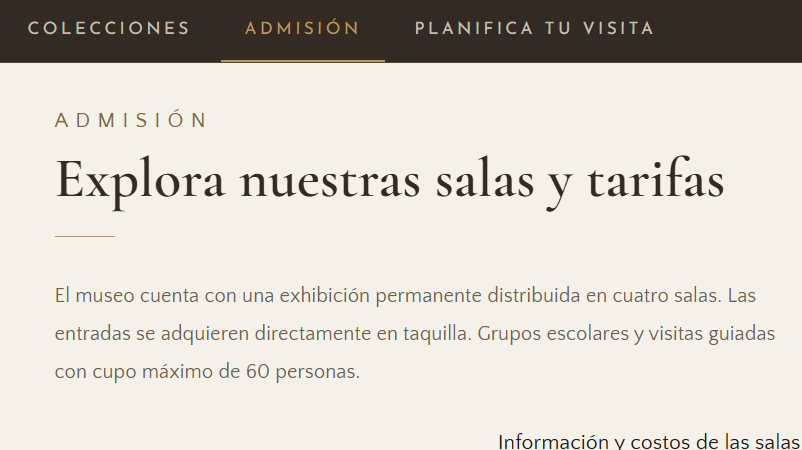
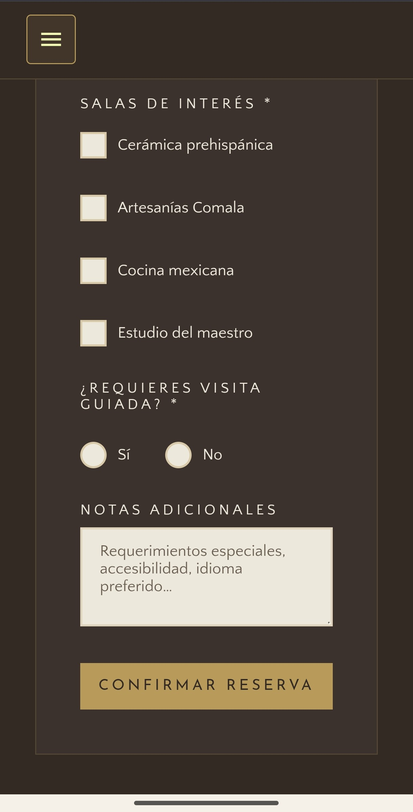
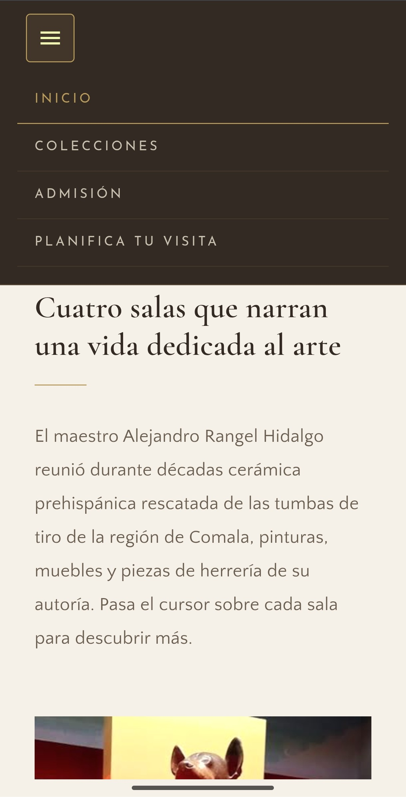

Featured Work
Museo Universitario Alejandro Rangel Hidalgo
An accessible and responsive web platform designed to explore the Museo Universitario Alejandro Rangel Hidalgo’s four exhibition halls, consult visitor information, and book visits online.

Role
Frontend Developer and Accessibility Evaluator
Project Goal
Design and develop an accessible website for MUARH enabling all visitors to explore galleries, check admission fees, and book visits online, while empirically evaluating WCAG compliance with screen reader users.
Target Audience
Designed for all museum visitors, with particular focus on blind and low-vision users navigating via keyboard, NVDA (Desktop), or TalkBack (Android).
Key Challenges & Constraints
The primary challenge was seamlessly embedding accessibility into both UI design and frontend architecture, particularly across complex interactive components:
Evaluation Constraints: The usability study was conducted with 3 participants with visual impairments using Chrome with the NVDA screen reader on desktop and TalkBack in partial reading mode on Android.
Design Strategy
From initial development, the platform was designed around the four core principles of WCAG 2.2: Perceivable, Operable, Understandable, and Robust.
Key Implementation Strategies
Structure & Semantics
- Semantic HTML5: Landmark regions (header, nav, main, footer).
- Heading Hierarchy: Logical document heading sequence.
- Language Spec: Document lang attribute defined.
- ARIA Integration: Dynamic states & live updates.
Visual & Contrast
- Color Contrast: WCAG AA/AAA compliant text ratios.
- Alternative Text: Descriptive alt attributes for images.
- Responsive Design: Fluid adaptation across all devices.
Keyboard & Forms
- Keyboard Navigation: Logical tab order & focus rings.
- Accessible Forms: Explicit labels & instructions.
- Descriptive Labels: Clear button and link names.
Evaluation Conducted
The accessibility evaluation was structured across three complementary methodology stages:
Manual Inspection
Comprehensive code review evaluating document structure, contrast ratios, keyboard navigation, and ARIA control behavior against WCAG 2.1 AA.
Automated Scans
Automated evaluation using Lighthouse and Silktide to identify underlying technical issues related to HTML structure and contrast.
Live User Testing
Qualitative usability testing sessions with 3 blind and low-vision participants navigating task scenarios via NVDA (Desktop) and TalkBack in partial reading mode (Android).
User Task Scenario
You are planning to visit the museum with a friend next Sunday, May 3rd, as you are both interested in seeing the pre-Hispanic ceramics gallery. Before leaving home, you decide to check the website to plan your schedule and calculate the budget for the visit.
- Find the admission price to enter the pre-Hispanic ceramics gallery.
- Book the visit to the ceramics gallery for two people for May 3, 2026.
Test Results & User Feedback
All three participants successfully completed the assigned task scenario, achieving a 100% completion rate. However, several key accessibility barriers and friction points were identified during testing:
Additional Interaction Barriers
- Certain form controls failed to announce their active/checked states to the screen reader.
- Form validation errors were not communicated auditorily to screen reader users.
- Keyboard focus was not automatically redirected to input fields containing errors.
- The email address field was occasionally bypassed during keyboard navigation.
- The numeric input field for selecting visitor count proved cumbersome to operate.
- The navigation link labeled "Recorridos" (Tours) did not clearly communicate that it led to admission pricing.
Positive User Feedback
On a positive note, participants highlighted the comfortable visual contrast ratios, the seamless Dark Mode adaptability, and the overall high baseline accessibility of the platform.
Final Design & Improvements
The final outcome was a responsive and accessible website that allows visitors to explore the museum’s galleries, find useful information, and book visits online.
Based on the user testing findings, we prioritized the following key interaction improvements across the platform:
Keyboard and screen reader accessibility
- Correct the keyboard focus order in the date picker.
- Announce selected dates and validation errors to screen reader users.
- Improve keyboard focus management within modal dialogs.
- Allow users to close modal dialogs with the Esc key.

Navigation and form usability
- Use clearer navigation labels, such as changing "Recorridos" to "Admisión".
- Simplify the control for selecting the number of visitors.

Mobile accessibility
- Increase touch target sizes for TalkBack and VoiceOver users.
- Announce active control states ("checked" or "unchecked") when toggled.
- Improve touch spacing for smoother mobile swipe navigation.


Conclusion
This project provided invaluable hands-on experience applying web accessibility principles across both UX design and frontend programming for a real-world digital experience.
Core Learning: Manual code inspections and automated tools (such as Lighthouse and Silktide) are essential baselines, but they cannot replace direct testing with real users. Even though all participants achieved a 100% completion rate, observing their live interactions revealed critical barriers related to keyboard focus, status messages, validation alerts, and interactive components.
Ultimately, the evaluation confirmed that accessibility must be approached as a continuous process of inclusive design, technical implementation, empirical user testing, and ongoing iteration.